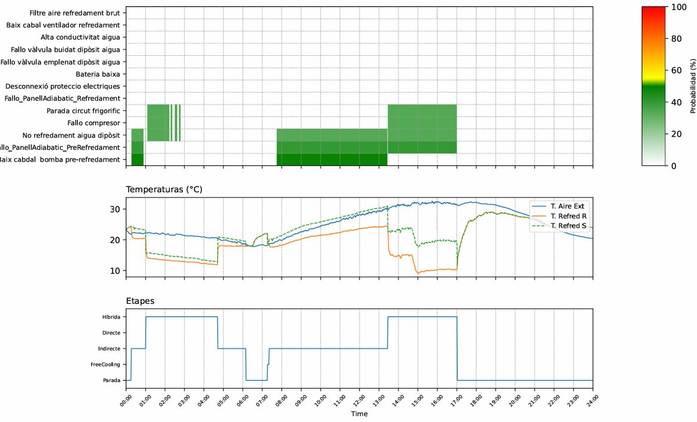

FDD system for HVAC units
Design and implementation of a fault detection and diagnosis (FDD) system for the 84 hybrid adiabatic HVAC units at the TAVIL plant, developed with PROISOTEC GRUP Digital Twin. A Simulink digital twin computes the expected nominal behaviour, and a MATLAB inference engine based on a fault signature matrix identifies the root cause of each deviation.
🏆Best MEI Master's Thesis AwardEnginyers Industrials de Catalunya · Demarcació de Girona · 2026↗
Validated with real plant data: it identifies adiabatic subsystem degradation and compressor shutdown, each with its own thermodynamic signature.
MATLABSimulinkDigital twinHVACPredictive maintenance
▶View presentationPDF